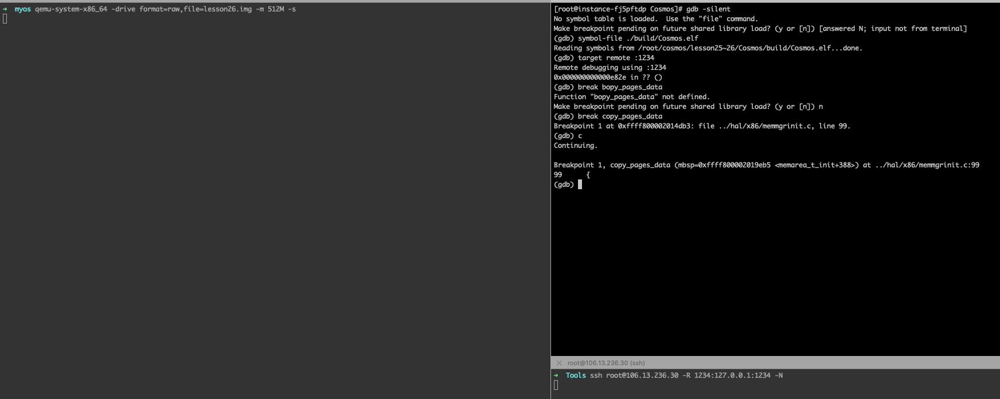
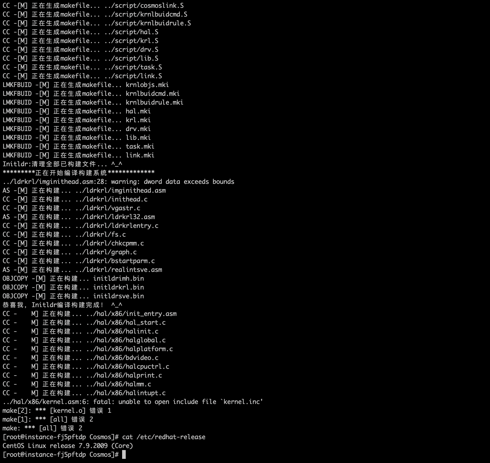
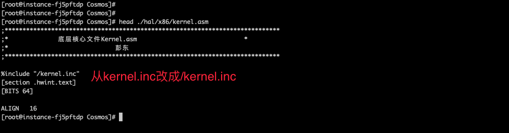
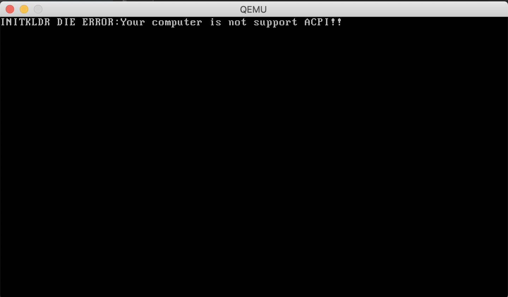
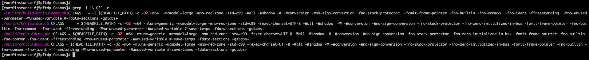
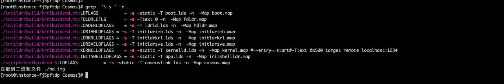
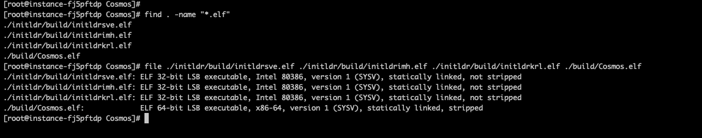
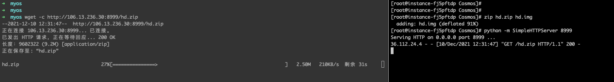
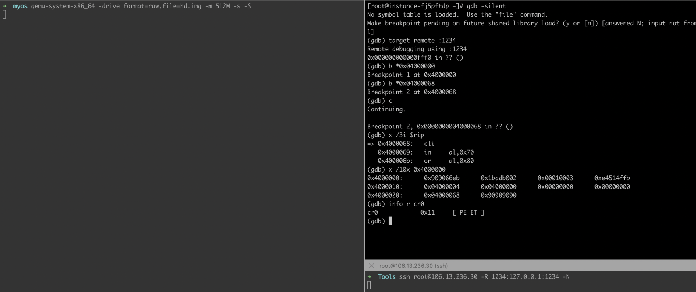

- 00 开篇词 为什么要学写一个操作系统？.md.html
- 00 编辑手记 升级认知，迭代自己的操作系统.md.html
- 01 程序的运行过程：从代码到机器运行.md.html
- 02 几行汇编几行C：实现一个最简单的内核.md.html
- 03 黑盒之中有什么：内核结构与设计.md.html
- 04 震撼的Linux全景图：业界成熟的内核架构长什么样？.md.html
- 05 CPU工作模式：执行程序的三种模式.md.html
- 06 虚幻与真实：程序中的地址如何转换？.md.html
- 07 Cache与内存：程序放在哪儿？.md.html
- 08 锁：并发操作中，解决数据同步的四种方法.md.html
- 09 瞧一瞧Linux：Linux的自旋锁和信号量如何实现？.md.html
- 10 设置工作模式与环境（上）：建立计算机.md.html
- 11 设置工作模式与环境（中）：建造二级引导器.md.html
- 12 设置工作模式与环境（下）：探查和收集信息.md.html
- 13 第一个C函数：如何实现板级初始化？.md.html
- 14 Linux初始化（上）：GRUB与vmlinuz的结构.md.html
- 15 Linux初始化（下）：从_start到第一个进程.md.html
- 16 划分土地（上）：如何划分与组织内存？.md.html
- 17 划分土地（中）：如何实现内存页面初始化？.md.html
- 18 划分土地（下）：如何实现内存页的分配与释放？.md.html
- 19 土地不能浪费：如何管理内存对象？.md.html
- 20 土地需求扩大与保障：如何表示虚拟内存？.md.html
- 21 土地需求扩大与保障：如何分配和释放虚拟内存？.md.html
- 22 瞧一瞧Linux：伙伴系统如何分配内存？.md.html
- 23 瞧一瞧Linux：SLAB如何分配内存？.md.html
- 24 活动的描述：到底什么是进程？.md.html
- 25 多个活动要安排（上）：多进程如何调度？.md.html
- 26 多个活动要安排（下）：如何实现进程的等待与唤醒机制？.md.html
- 27 瞧一瞧Linux：Linux如何实现进程与进程调度_.md.html
- 28 部门分类：如何表示设备类型与设备驱动？.md.html
- 29 部门建立：如何在内核中注册设备？.md.html
- 30 部门响应：设备如何处理内核I_O包？.md.html
- 31 瞧一瞧Linux：如何获取所有设备信息？.md.html
- 32 仓库结构：如何组织文件_.md.html
- 33 仓库划分：文件系统的格式化操作.md.html
- 34 仓库管理：如何实现文件的六大基本操作？.md.html
- 35 瞧一瞧Linux：虚拟文件系统如何管理文件？.md.html
- 36 从URL到网卡：如何全局观察网络数据流动？.md.html
- 37 从内核到应用：网络数据在内核中如何流转.md.html
- 38 从单排到团战：详解操作系统的宏观网络架构.md.html
- 39 瞧一瞧Linux：详解socket实现与网络编程接口.md.html
- 40 瞧一瞧Linux：详解socket的接口实现.md.html
- 41 服务接口：如何搭建沟通桥梁？.md.html
- 42 瞧一瞧Linux：如何实现系统API？.md.html
- 43 虚拟机内核：KVM是什么？.md.html
- 44 容器：如何理解容器的实现机制？.md.html
- 45 ARM新宠：苹果的M1芯片因何而快？.md.html
- 46 AArch64体系：ARM最新编程架构模型剖析.md.html
- LMOS来信：第二季课程带你“手撕”计算机基础.md.html
- 大咖助场 以无法为有法，以无限为有限.md.html
- 用户故事 yiyang：我的上机实验“爬坑指南”.md.html
- 用户故事 成为面向“知识库”的工程师.md.html
- 用户故事 技术人如何做选择，路才越走越宽？.md.html
- 用户故事 操作系统发烧友：看不懂？因为你没动手.md.html
- 用户故事 用好动态调试，助力课程学习.md.html
- 用户故事 艾同学：路虽远，行则将至.md.html
- 结束语 生活可以一地鸡毛，但操作系统却是心中的光.md.html
- 捐赠
用户故事 用好动态调试，助力课程学习
你好，我是leveryd。
先做个自我介绍，我在网络安全行业从事技术工作，目前在负责安全产品的研发工作，工作六年。
虽然在研发工作中，我们通常是遇到什么问题就去查，边查边学。虽然这样的学习方式能快速解决问题，但有时候这种方法也不灵，比方说学习语义分析时，就必须要把词法分析、语法分析先学了，一通搜索、查阅、汇总和学习，回头一看，需要花费的时间和精力还是不少的。
显然，只靠自己在网上搜索，学到的常常是零零散散，效率太低。尤其是和工作的关联程度很高的必修知识，我觉得不太适合边查边学，更需要系统学习。结合自己的工作需要，今年年初的时候，我给自己安排了近期学习计划，定下了相应的学习的优先级。
其中，补充操作系统的专业知识就是高优先级的一项。近期学习《操作系统实战45讲》的过程中，我也跟着课程内容开始动手实践，还在课程群里分享了自己的调试经验。接到LMOS老师的邀请，今天我就和你聊聊我是怎样学习这门课程，以及我是如何调试课程代码的。
我是怎么学习《操作系统实战45讲》的
根据我的学习需求，我给自己立下了两个学习目标：
第一，理解第十三课的代码：第十三课之前的内容包括了整个机器初始化过程；
第二，理解第二十六课的代码：比第十三课内容多了“内存”和“进程”。
在这个过程中，我会遇到一些问题，我把解决这些问题的实践经验写到公众号（公众号上我记录了这门课的学习实验笔记，以及关于安全业务和技术的一些案例）上，以此加深自己的理解。
就目前我自己的学习经验来看，“内核实验”比较复杂。这主要是因为内核涉及的知识较多，比如C语言、汇编、硬件知识；而且这方面内容比较底层，某些概念我们平时接触得比较少，比如汇编层面的函数调用细节。
另外，部分算法乍一看确实有点难理解，比如第二十五课中进程的切换是利用“栈上的函数返回地址”，而“返回地址”包括初始化和后面被进程调度器更新这两种场景。我们需要弄清楚这两个场景都是怎么更新的，才能更好理解进程是如何切换运行的。
Cosmos调试思路
因为刚才说的这些原因，当我们遇到疑问时，往往无法从网络上直接搜到答案。这个时候，就可以通过调试来辅助我们分析问题。
接下来，我就说一说我是怎么调试课程代码的，后面还会再分享一下我通过动态调试解决疑问的例子。
虽然我们可以在代码中打印日志，但这种方式效率不高，因为每次都需要编写代码、重新编译运行。我更喜欢用GDB和QEMU动态调试Cosmos。
结合下图中我们可以看到：使用GDB在Cosmos内核函数下了断点，并且断点生效。如果我想观察copy_pages_data的逻辑，就只需要在单步调试过程中观察内存的变化，这样就能知道copy_pages_data建立的页表数据长什么样子。

总的来说，想要动态调试，我们首先需要编译一个带调试符号的elf文件出来，然后更新hd.img镜像文件。
接着我们用QEMU启动内核，具体命令如下：
➜ myos qemu-system-x86_64 -drive format=raw,file=hd.img -m 512M -cpu kvm64,smep,smap -s // 一定要加-s参数，此参数可以打开调试服务。
最后，我们用GDB加载调试符号并调试，具体命令如下：
(gdb) symbol-file ./initldr/build/initldrkrl.elf // 加载调试符号，这样才能在显示源码、可以用函数名下断点
Reading symbols from /root/cosmos/lesson13/Cosmos/initldr/build/initldrkrl.elf...done.
(gdb) target remote :1234 // 连接qemu-system-x86_64 -s选项打开的1234端口进行调试
Remote debugging using :1234
0x000000000000e82e in ?? ()
我已经将编译好的带调试符号的elf文件，以及对应的hd.img镜像文件放在了GitHub上，你可以直接用这些文件和上面的命令来调试。仓库中目前我只放了对应第十三课和第二十六课的调试文件，如果你想要调试其他课的代码，不妨继续往下看。
制作“带调试符号的elf文件”的详细步骤
如果你调试过Linux内核，应该比较熟悉上面的流程。不过在制作“带调试符号的elf文件”时，Cosmos和Linux内核有些不同，下面我就详细说明一下。
先说说整体思路：通过修改编译选项，即可生成“带调试符号的elf文件”。然后再生成Cosmos.eki内核文件，最后替换hd.img镜像文件中的Cosmos.eki文件。这样，我们就可以用“带调试符号的elf文件”和hd.img来调试代码了。
修复两个bug
只有先修复后面这两个bug，才能成功编译，并且运行Cosmos内核代码。
第一个问题是：编译第十三课的代码时遇到一个报错，报错截图如下。

解决办法很简单：将kernel.asm文件中的“kernel.inc”修改成“/kernel.inc”，你可以对照后面的截图看一下。

第二个问题是第二十六课遇到的运行时报错，如下图所示。

因为acpi是和“电源管理”相关的模块，这里并没有用到，所以我们可以注释掉 initldr/ldrkrl/chkcpmm.c 文件中的init_acpi 函数调用。
解决掉这两个问题，就可以成功编译第十三课和第二十六课的代码了。
修改“编译选项”
修复bug后，我们虽然能够成功编译运行，但是因为文件没有调试符号，所以我们在GDB调试时无法对应到c源码，也无法用函数名下断点。因此，我们需要通过修改编译选项来生成带调试符号的elf文件。
为了编译出带调试符号的执行文件，需要对编译脚本做两处修改。
第一处修改，GCC的-O2参数要修改成O0 -g参数：-O0是告诉GCC编译器，在编译时不要对代码做优化，这么做的原因是避免在GDB调试时源码和实际程序对应不上的情况；-g参数是为了告诉编译器带上调试符号。
第二处修改，去掉ld的-s参数：-s是告诉ld程序链接时去掉所有符号信息，其中包括了调试符号。
需要替换和修改的文件位置如下图：


使用sed命令，即可批量将-O2 参数修改成-O0-g ，代码如下：
[root@instance-fj5pftdp Cosmos]# sed -i 's/-O2/-O0 -g/' ./initldr/build/krnlbuidcmd.mh ./script/krnlbuidcmd.S ./build/krnlbuidcmd.mki ./build/krnlbuidcmd.mk
[root@instance-fj5pftdp Cosmos]# sed -i 's/-Os/-O0 -g/' ./initldr/build/krnlbuidcmd.mh ./script/krnlbuidcmd.S ./build/krnlbuidcmd.mki ./build/krnlbuidcmd.mk
[root@instance-fj5pftdp Cosmos]# grep -i '\-O2' -r .
[root@instance-fj5pftdp Cosmos]#
使用sed命令批量去掉ld的-s参数，代码如下：
[root@instance-fj5pftdp Cosmos]# sed -i 's/-s / /g' ./initldr/build/krnlbuidcmd.mh ./script/krnlbuidcmd.S ./build/krnlbuidcmd.mki ./build/krnlbuidcmd.mk
[root@instance-fj5pftdp Cosmos]# grep '\-s ' -r .
完成上面的操作以后，编译选项就修改好了。
编译生成“带调试符号的elf文件”
我们修复bug和修改编译选项后，执行make就可以编译出带有调试符号的elf文件，如下图：这里的“not stripped”就表示文件带有调试符号。

这里有两个要点，我特别说明一下。
1.Cosmos.elf：当需要调试“内核代码”时，可以在GDB中执行symbol-file ./initldr/build/Cosmos.elf加载调试符号。
2.initldrkrl.elf：当需要调试“二级加载器代码”时，可以在GDB中执行symbol-file ./initldr/build/initldrkrl.elf加载调试符号。
重新制作hd.img
最后一步，我们需要重新制作hd.img，这样VBox或者QEMU就能运行我们重新生成的Cosmos内核。
整个过程很简单，分两步。首先生成Cosmos.eki，这里需要注意的是，font.fnt等资源文件要拷贝过来。
[root@instance-fj5pftdp build]# pwd
/root/cosmos/lesson25~26/Cosmos/initldr/build
[root@instance-fj5pftdp build]# cp ../../build/Cosmos.bin ./
[root@instance-fj5pftdp build]# cp ../../release/font.fnt ../../release/logo.bmp ../../release/background.bmp ./
[root@instance-fj5pftdp build]# ./lmoskrlimg -m k -lhf initldrimh.bin -o Cosmos.eki -f initldrkrl.bin initldrsve.bin Cosmos.bin background.bmp font.fnt logo.bmp
文件数：6
映像文件大小：5169152
然后更新hd.img，替换其中的Cosmos.eki。
[root@instance-fj5pftdp build]# pwd
/root/cosmos/lesson25~26/Cosmos/initldr/build
[root@instance-fj5pftdp build]# mount ../../hd.img /tmp/
[root@instance-fj5pftdp build]# cp Cosmos.eki /tmp/boot/
cp：是否覆盖"/tmp/boot/Cosmos.eki"？ y
[root@instance-fj5pftdp build]# umount /tmp/
[root@instance-fj5pftdp build]#
完成上面的操作以后，hd.img就制作好了。现在我们可以用hd.img和之前生成的elf文件来调试代码。
打包传输hd.img到mac
因为我是在云上购买的Linux虚拟机上调试Mac上QEMU运行的Cosmos内核，所以我需要把Linux上制作的hd.img传输到Mac。你可以根据自己的实际情况设置传输地址。

如何通过动态调试验证grub镜像文件的加载过程
动态调试也好，汇编代码也罢，其实都是为我们分析问题和解决问题服务的。对于调试不太熟悉的小伙伴也别有太大心理负担，一回生、二回熟嘛，咱们多试试就有手感了。
接下来，我就给你分享个比较简单的案例，你只需要看到几行汇编代码，就能解决一些学习中的小疑问。
在正式讲解这个调试案例之前，我先交代下问题背景。在学习课程中的“初始化”部分时，我有两个疑问：
1.代码从grub到Cosmos项目时，第一条指令是什么？这条指令被加载到哪里执行？
2.此时CPU是实模式还是保护模式？
为了解决这两个疑问，我开始了自己的探索之旅。
分析过程
[root@instance-fj5pftdp Cosmos]# od -tx4 ./initldr/build/Cosmos.eki | head -3
0000000 909066eb 1badb002 00010003 e4514ffb
0000020 04000004 04000000 00000000 00000000
0000040 04000068 90909090 e85250d6 00000000
根据 11 | 设置工作模式与环境（中）：建造二级引导器课程中说的GRUB头结构，结合上面的Cosmos.eki文件头信息，我们很容易就能知道，_start符号地址是0x04000000,_entry符号地址是0x04000068。
所以，可以猜测：grub程序会加载cosmos.eki到0x04000000位置，然后跳到0x04000000执行，再从0x04000000 jmp 到0x04000068。
我们可以使用GDB调试验证是否符合这个猜测，调试代码如下:
[root@instance-fj5pftdp Cosmos]# gdb -silent
(gdb) target remote :1234
Remote debugging using :1234
0x0000000000008851 in ?? ()
(gdb) b *0x04000000
Breakpoint 1 at 0x4000000
(gdb) b *0x04000068
Breakpoint 2 at 0x4000068
(gdb) c
Continuing.
Breakpoint 1, 0x0000000004000068 in ?? ()
(gdb) x /3i $rip // 和imginithead.asm文件内容可以对应上
=> 0x4000068: cli
0x4000069: in al,0x70
0x400006b: or al,0x80
(gdb) x /10x 0x4000000 // 和cosmos.eki文件头可以对应上
0x4000000: 0x909066eb 0x1badb002 0x00010003 0xe4514ffb
0x4000010: 0x04000004 0x04000000 0x00000000 0x00000000
0x4000020: 0x04000068 0x90909090 0xe85250d6 0x00000000
(gdb) info r cr0
cr0 0x11 [ PE ET ]

通过GDB可以看到，程序不是在0x04000000断点暂停，而是直接在0x04000068 断点暂停，说明第一条指令不是_start符号位置而是_entry符号位置。到_entry时，cr0的pe=1，这表明此时保护模式已经打开了。怎么样？是不是挺方便的？
经过前面的调试，我得到了最后的结论：第一条指令是_entry符号位置，地址是0x04000068。到0x04000068这一条指令时，CPU已经是保护模式了。
我的分享到这里就告一段落啦。为了照顾刚入门的同学，我再提供两个参考资料。关于GDB的使用，你可以参考 100个GDB小技巧。关于QEMU、GCC、ld等命令参数的含义，你可以参考 man手册。
希望这篇加餐对你有所启发，如果你有什么好的学习方法，不妨也在留言区多多分享，让我们一起学习进步。
© 2019 - 2023 Liangliang Lee. Powered by gin and hexo-theme-book.